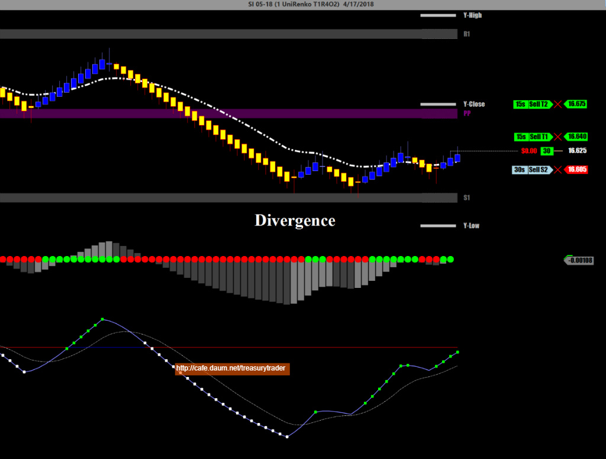
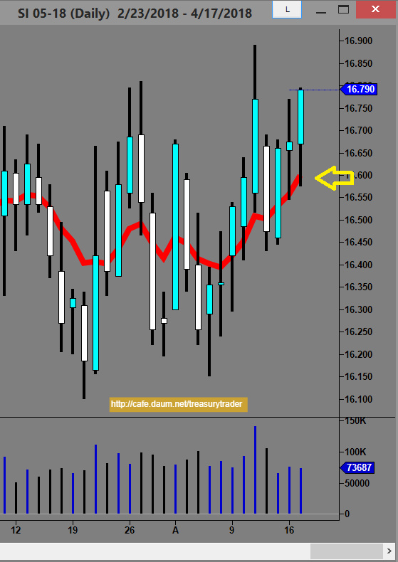
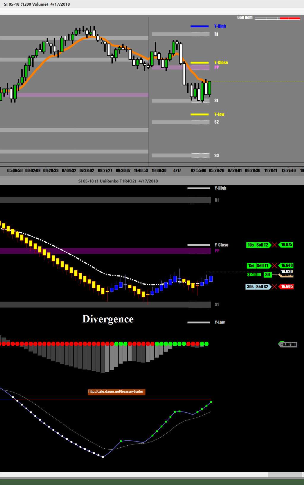
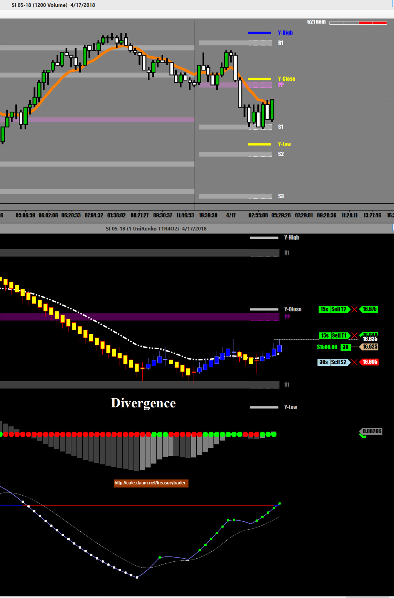
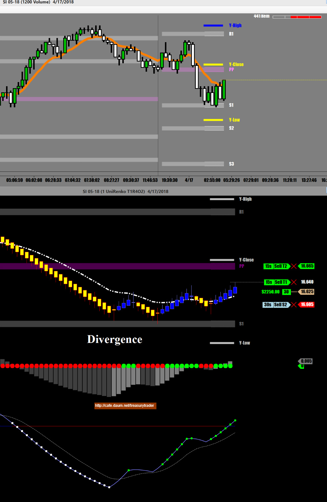
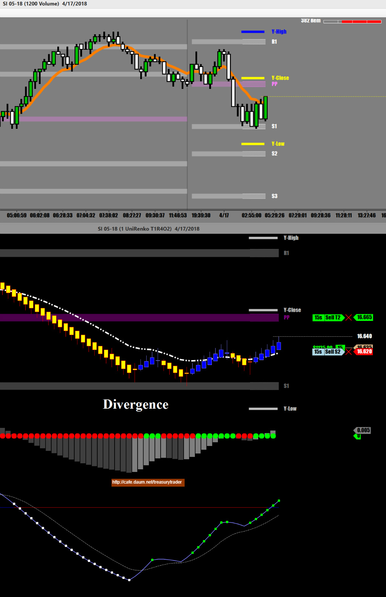
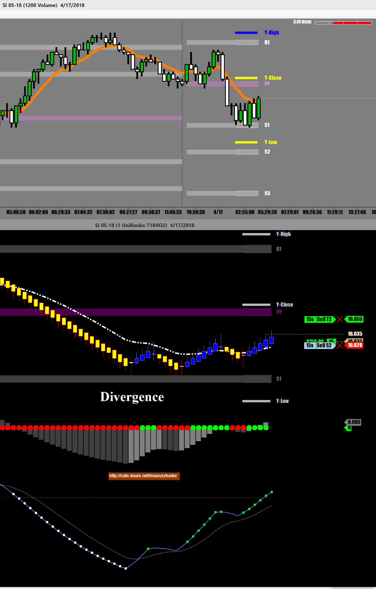
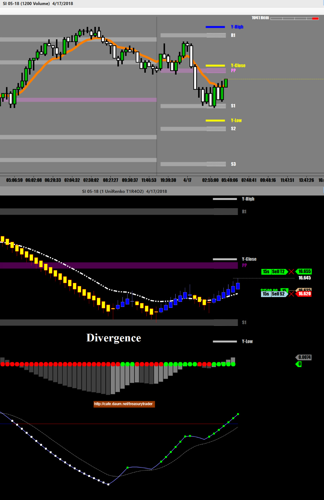
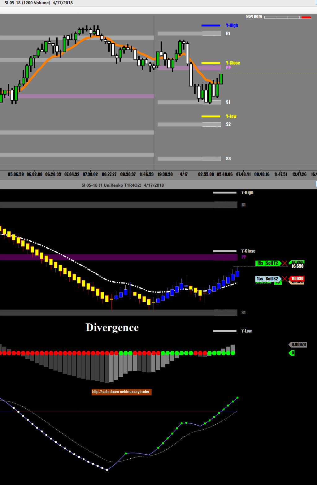
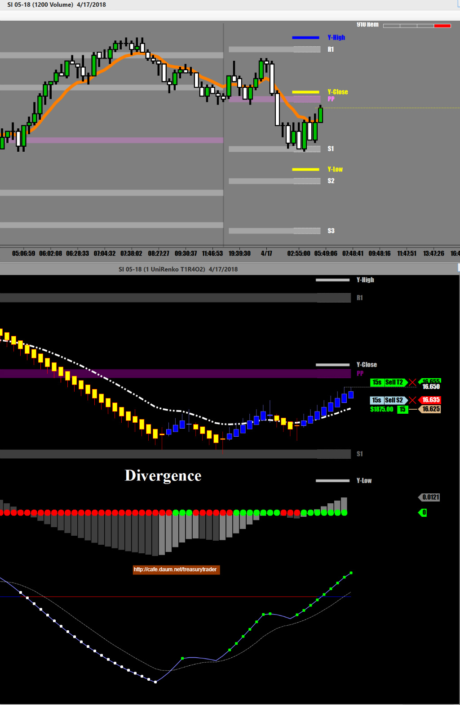

Silver나 copper는 상하이 증시가 오픈할 때 크게 한번 움직이고 미국 증시가 오픈할 때 또 한번 크게 움직이는 경우가 많다
특별한 경우를 제외하고는 보통 장 오픈하고 2시간안에 큰 움직임은 대부분 끝이나는 경우가 많다
세계최대의 선물회사인 CME가 2015년 7월2일부로 모든 open out cry(경매시장)을 폐지한 이후로
하루 1시간을 제외한 23시간 동안 매매가 이루어지는 Silver는 특별한 장 오픈이 없는통에
일반 증시가 오픈하는 뉴욕시간 아침8시부터 10시까지 샹하이 증시와 유럽증시 개장 전후가 거래량도 많고 움직임도 크다
Precious Metal(금 은 백금)은 대부분 달러화의 등락에 예민하게 반응한다
달러화는 전세계 모든 선물과 증시에 영향을 미치기 때문에 매매하는 동안
달러인덱스를 같이 펼쳐놓고 보고있으면 도움이 된다
달러 인덱스가 오르면 금이나 은은 하락하고 Vice versa.
하지만 반드시 그런것은 아니기 때문에 그저 매매에 참고로만 해야 한다
무료로 실시간 달러인덱스를 제공하는곳이 많기 때문에 구태여 닌자 키네틱에서 70불을 따로 주고 구독할 필요는 없다.
http://www.livecharts.co.uk/ForexCharts/dollarindex.php
https://www.investing.com/quotes/us-dollar-index-streaming-chart
1분 챠트에서 MACD를 챠트상에 띄워놓으면 단기추세를 볼 수 있어 좋다
오늘 첫번째 매매 기록

여기서 Long position으로 진입한 이유는
일봉상 이평선에서 지지받고 오늘장은 상승으로 가는 상황이기 때문에 매수로 진입함




절반 수익실현. 손절 땡겨 올리고





1차 매매 성공
오늘 일봉상 이평선에서 지지받고 상승추세라
계속 실버로 매매 중